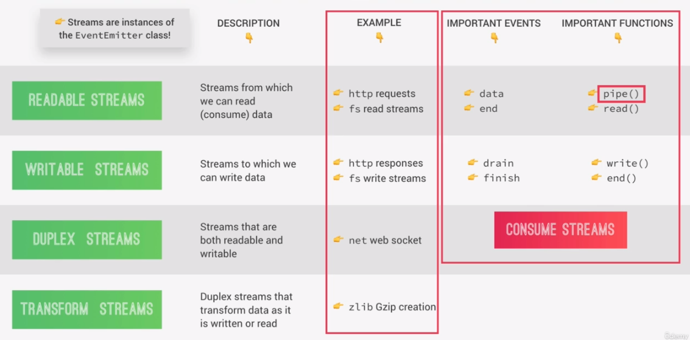

Node.js is single threaded (only 1 process running).
All users accessing your app are accessing the same thread.
This means if a user blocks a thread, all other users must wait until its execution finishes.
With asynchronous code, the users are not blocked in a single thread since the longer running process is
executing in the background.
When finished exeucting in the background, a callback function is run.
Node Architecture
Node dependencies
Node has several dependencies, but the most important are:
V8 engine
libuv
V8 engine
The V8 engine is what converts JavaScript code into machine code that a computer can actually understand.
But, that alone is not enough to create a whole server side framework like Node.
V8 is Written in JavaScript and C++.
libuv
libuv is needed in addition to V8 to create the server side framework. libuv is an open source library with a
strong focus on asynchronous IO.
This layer is what gives Node access to the underlying computer operating system, file
system, networking, and more.
libuv also implements two extremely important features of Node.JS
the event loop: responsible for handling easy tasks like executing call backs
and network IO
the thread pool: the event loop is while the thread pool is for more heavy
work like file access or
compression or something like that.
libuv is completely written in C++.
Processes, Threads, and the Thread Pool
Node runs a single process.
In this process, Node runs a single thread which can be thought of as a sequence of instructions.
When the program is initialized, all the top level code is executed, which means all the code that is not inside
any callback function. Also, all the modules that your app needs are required and all the callbacks are
registered.
Then, the Event Loop starts running. The event loop is where most of the work is done in your app. So, it's
really the heart of the entire Node architecture.
Thread Pool
Some tasks are too heavy to be executed in the event loop because they would then block the single thread. That's
where the thread pool comes in, which just like the event loop, is provided to Node.js by the libuv library.
Node automatically offloads blocking operations into the thread pool, where they don't block the event loop.
The Event Loop
The event loop is the heart of the Node architecture. It is where all the application code that is inside
callback functions is executed. So, all code that is not top level code will run in the event loop.
The Event Loop is what makes asynchronous programming possible in Node.js, making it the most important feature
in Node's design and making Node.js completely different from other platforms.
It takes care of all incoming events and performs orchestration by offloading heavier tasks into the thread pool,
and doing the most simple work itself.
Node uses Event-Triggered-Architecture.
As soon as an event completes, the Event Loop picks them up and calls their callback functions.
It's often said that the event loop does the orchestration, which simply means that it receives events, calls
their callback functions, and offloads the more expensive tasks to the thread pool.
It's very important for you to correctly understand the event loop so that you can write your own performing code
and also debug your own code when something goes wrong in an unexpected way.
The Event Loop is also needed because in Node.js everything works in one single thread, so you can have thousands
or millions
of users accessing the same thread at the same time. This makes Node so lightweight and scalable, but at the same
time, it comes with the danger of blocking our single thread, which would make the entire app slow or even stop
for all your users accessing the app.
Guidelines to not block the Event Loop
Don't use the sync versions of functions in the fs, crypto, or zlib modules in your callback functions.
Don't perform very complex calculations in the event loop.
Be careful with JSON in very large objects because at some point, it can start to take a long time to parse,
or to stringify, JSON.
Don't use all too complex regular expressions, for example, with multiple nested quantifiers or back
references, because again, they can take longer than expected.
Order callbacks are executed
When an application starts, the event loop starts running right away. The event loop has multiple phases, and
each phase has a callback queue, which are the callbacks coming from the events that the event loop receives.
4 phases
Expired timer callbacks
The first phase takes care of callbacks of expired timers, for example, from the setTimeout() function. If there
are callback functions from timers that just expired, these are the first ones to be processed by the Event Loop.
If a timer expires later during the time when one of the other phases are being processed, then the callback of
that timer will only be called as soon as the event loop comes back to this first phase.
I/O polling and callbacks
Polling means looking for new I/O events that are ready to be processed and putting them into the callback queue.
I/O means stuff like networking and file access,so it's in this phase where 99% of code gets executed.
This is because in a typical Node app, the bulk of what needs to get done is related to networking and also, file
accessing.
setImmediate callbacks
setImmediate is a special kind of timer that processes callbacks immediately after the
I/O polling and execution phase.
Close callbacks
In this phase, all close events are processed, for example, for when a web server or a WebSocket shut down.
2 additional queues
If there are any callbacks in one of these two queues to be processed, they will be executed right after the
current 4 phases of the Event Loop finishes.
nextTick() queue
Used for advanced use cases.
microtasks queue
Used for resolved promises.
Events and Event Driven Architecture
In Node, there are certain objects called event emitters that emit named events
as soon as something important happens in the app, like a request hitting server, or a timer expiring, or a file
finishing to read.
These events can then be picked up by event listeners that we developers set up,
which will fire off callback functions that are attached to each listener.
Streams
With streams we can process meaning read and write data piece by piece without completing the whole read or write
operation.
Therefore we don't have to keep all the data in memory to do these operations.
For example, when we read a file using streams, we read part of the data, do something with it, then free our
memory, and repeat this until the entire file has been processed. Or think of YouTube or Netflix, which are both
called streaming companies because they stream video using the same principle.
This makes streams the perfect candidate for handing large volumes of data like for example, video or also data
that we're receiving piece by piece from an external source.
4 types of streams
Readable Streams
Writable Streams
Duplex Streams
Transform Streams

These events and functions are for consuming streams that are already implemented. So for example, Node
implemented these http requests and responses as streams, and we can then consume, we can use them using the
events and functions that are available for each type of stream.
It's more important to know how to consume streams, not how to implement them.
Requiring Modules
What happens each time we require a module by calling the require function with a
module name as the argument? As a very broad overview, the following steps are executed behind the scenes.
First, the path to the required module is resolved and the file is loaded.
Then a process called wrapping happens
The module code is executed
The module exports are returned
Finally the entire module gets cached
Resolving & Loading
How does node know which file to load when we require a module?
When the require functions receives the module name as its input, it will first try to load a core module with
that name. Like for example, the http module. It will automatically find a path to that module and then load it.
If the path starts with a dot, or two dots, it means that it's a developer module. Because we indicate the
relative path to our file. So node will try to load that file.
If there is no file with that name, then it will look for a folder instead and load index.js if it's in that folder. In case there is no file at this path, it will then,
instead, try to open index.js from the lib/controller folder instead.
If the required module is neither a core module, nor a developer module, node will assume it's a module from npm.
On a module that we load from npm, we actually don't need to write the path when we require it. Just the module
name, just the way it works on a core module. So these third party modules are stored in a node_modules folder, so node will step into that folder and try to find a module
there and then load it.
Wrapping
After the module is loaded, the module's code is wrapped into a special function which will give us access to a
couple of special objects.
It is here where we get the answer to the question, where does the require function actually come from and why do
we have access to it? It's because the nodejs run time, takes the code off our module and puts it inside the
immediately invoked function expression, or IIFE that you can see here.
node does not directly execute the code that I rewrite into a file, but instead, the wrapper function that will
contain our code in it's body.
It also passes the exports, require, module, __filename, and __dirname objects into it.
So that is why in every module we automatically have access to stuff like the require function.
So these are basically like global variables that are injected into each and every module.
By doing this, node achieves two very important things.
First, is giving developers access to all these variables we just talked about, which is very helpful.
Second, it keeps the top-level variables that we define in our modules private. So it's scoped only to the
current module instead of leaking everything into the global object.
Execution
The code in the module's wrapper function gets executed by the Nod.js runtime.
Returning Exports
Now, it's time for the require function to return something. And what it returns is the
exports of the required module.
These exports are stored in the module.exports object.
So, again, in each module we can export variables, which will, in the end be returned by the require function.
And we do that by assigning variables to module.exports or simply to exports where it is just a pointer to
module.export.
When to use module.export or just export?
If all you want to do is to export one single variable, like one class or one function, you usually use
module.exports and set it equal to the variable that you want to export.
On the other hand, if you're looking to export multiple named variables like multiple functions, for example,
then you should create these as properties of the export object.
Caching
The last step is that modules are actually cached after the first time they are loaded. What this means is that
if you require the same module multiple times, you will always get the same result. And the code in the modules is
actually only executed in the first call. In subsequent calls,the result is simply retrieved from cache.